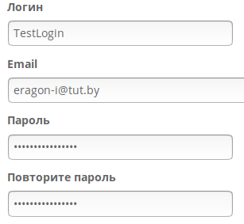
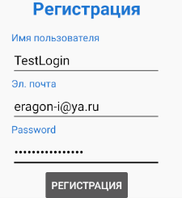
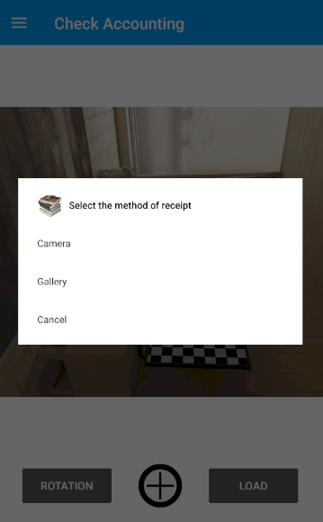
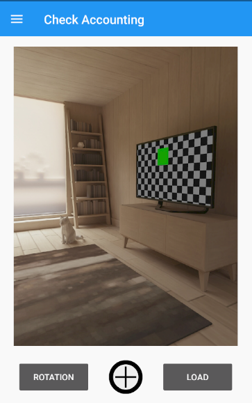

Авторизация
-
Регистрация
Нажмите "Зарегистрироваться" в правой части навигационного меню (оно расположено в верхней части сайта), как показно на рисунке 1.1, или добавьте в адресную строку сразу после названия сайта следующее: "/authorization/register". Также это можно сделать из формы входа, нажав снизу на "Новый пользователь? Нажмите, чтобы зарегистрироваться!", отображенной на картинке 2.2.
Рисунок 1.1 - Переход к регистрации
Откроется форма регистрации, как указано на изображении 1.2.
Рисунок 1.2 - Отображение страницы регистрации
Заполните свои данные. Пример отображен на картинке 1.3. Нажмите на кнопку "Зарегистрироваться", которая видна на изображении 1.2.
Рисунок 1.3 - Заполненные данные регистрации
Войдите на свой почтовый адрес, указанный при регистрации. Вам должно прийти письмо с подтверждением регистрации на подобии указанного в примере на рисунке 1.4.
Рисунок 1.4 - Письмо с подтверждением регистрации
Выполните инструкции, указанные в письме. После перехода по ссылке откроется окно как представлено на изображении 1.5.
Рисунок 1.5 - Отображение подтвержденной учетной записи
Поздравляем с успешной регистрацией и Вашим первым важным шагом на нашем сайте!
-
Вход в учетную запись
Предполагается, что пользователь уже был зарегистрирован в системе (см. пункт "Регистрация").
Нажмите "Войти" в правой части навигационного меню (оно расположено в верхней части сайта), как показно на рисунке 2.1 или добавьте в адресную строку сразу после названия сайта следующее: "/authorization/login". Также это возможно сделать из формы регистрации, нажав снизу на " Уже зарегистрированы? Войти.", отображенной на картинке 1.2.
Рисунок 2.1 - Переход к авторизации
Откроется форма входа, как указано на изображении 2.2.

Рисунок 2.2 - Отображение страницы входа
Заполните свои данные. Пример отображен на картинке 2.3. Если Вы желаете запомнить сессию для этого устройства, поставьте галочку, нажав на поле выбора или на текст "Запомнить меня". Далее нажмите на кнопку "Войти", которая видна на изображении 2.2.
Рисунок 2.3 - Заполненные данные формы входа
Вы должны были успешно войти в систему и оказаться на главной странице. Если это так, в навигационном меню в правой части теперь должно отображаться "Привет, {Ваш логин}", "Профиль" и "Выйти", как видно на картинке 3.1.
-
Выход из учетной записи
Предполагается, что пользователь уже вошел в учетную запись системы (см. пункт "Вход в учетную запись").
Нажмите "Выйти" в правой части навигационного меню (оно расположено в верхней части сайта), как показно на рисунке 3.1, или добавьте в адресную строку сразу после названия сайта следующее: "/authorization/logout".
Рисунок 3.1 - Переход к выходу из учетной записи
Вы должны были успешно выйти из системы и оказаться на главной странице. Если это так, в навигационном меню в правой части теперь должно отображаться "Войти" и "Зарегистрироваться", как видно на картинке 2.1.
-
Сброс пароля
Предполагается, что пользователь уже зарегистрирован в системе (см. пункт "Регистрация").
Перейдите на форму входа (см. пункт "Вход в учетную запись"). Нажмите "Забыли пароль? Нажмите для сброса", как видно из рисунка 2.2, или добавьте в адресную строку сразу после названия сайта следующее: "/authorization/reset_password_request".
Откроется форма сброса пароля, как указано на изображении 4.1.

Рисунок 4.1 - Отображение страницы сброса пароля
Заполните свои данные. Пример отображен на картинке 4.2. Далее нажмите на кнопку "Сбросить пароль", которая видна на изображении 4.1.
Рисунок 4.2 - Заполненные данные формы сброса пароля
Войдите на свой почтовый адрес, указанный при регистрации. Вам должно прийти письмо с подтверждением сброса пароля на подобии указанного в примере на рисунке 4.3.
Рисунок 4.3 - Письмо с подтверждением сброса пароля
Выполните инструкции, указанные в письме. После перехода по ссылке откроется окно как представлено на изображении 4.4.
Рисунок 4.4 - Отображение страницы со сброшенным паролем
Введите данные, после чего нажмите "Сбросить пароль".
Вы должны были успешно изменить пароль и оказаться на форме входа в систему.
См. пункт "Вход в учетную запись".
Андроид
-
Первый запуск
После установки приложения на свое android-устройство, выполните его запуск. Программа откроется и отобразится окно как на рисунке 1.1.
Рисунок 1.1 - Начальный экран
Навигация в программе осуществляется посредством выдвижного меню. Чтобы его открыть, нажмите на верхнюю область (называемую панелью инструментов), содержащую полоски в левой части. После осуществленного нажатия отобразилась панель навигации, как видно из изображения 1.2. Также меню можно открыть при проведении по экрану слева-направо.
Рисунок 1.2 - Панель навигации
Взаимодействию с различными секциями программы будет предшествовать переход по данной области. Остальные функции будут описаны ниже. Теперь, если у Вас еще нет учетной записи, перейдите к пункту "Регистрация", в ином случае - "Вход в систему".
-
Регистрация
Регистрацию можно осуществить непосредственно на сайте (см. раздел "Авторизация" пункт "Регистрация").
Перейдите к пункту "Регистрация", посредством меню. Откроется окно, отображенное на картинке 2.1.
Рисунок 2.1 - Отображение экрана регистрации
Заполните свои данные. Пример отображен на картинке 2.2. Нажмите на кнопку "Регистрация".
Рисунок 2.2 - Заполненные данные регистрации
Войдите на свой почтовый адрес, указанный при регистрации. Вам должно прийти письмо с подтверждением регистрации на подобии указанного в примере на рисунке 1.4 раздела "Авторизация".
Выполните инструкции, указанные в письме. После перехода по ссылке откроется окно как представлено на изображении 1.5 раздела "Авторизация".
Поздравляем с успешной регистрацией и Вашим первым важным шагом!
-
Вход в учетную запись
Предполагается, что пользователь уже был зарегистрирован в системе (см. пункт "Регистрация").
Перейдите на форму авторизации. Заполните свои данные, указанные при регистрации. Пример отображен на рисунке 3.1
Рисунок 3.1 - Заполненные данные формы входа
Вы должны были успешно войти в систему.
-
Выход из учетной записи
Предполагается, что пользователь уже вошел в учетную запись системы (см. пункт "Вход в учетную запись").
Перейдите в раздел "Профиль". Он будет представлен как на картинке 4.1. Далее нажмите "Выйти".
Рисунок 4.1 - Экран учетной записи
Вы должны были успешно выйти из системы.
-
Загрузка чека
Предполагается, что пользователь уже вошел в учетную запись системы (см. пункт "Вход в учетную запись").
Перейдите в раздел "Камера", представленный на рисунке 1.1. Далее нажмите на кнопку "+". Откроется выбор получения фотографии, отображенный на рисунке 5.1. Для непосредственного открытия камеры можно провести по экрану справа-налево.
Рисунок 5.1 - Выбор получения фотографии
Выберите один из представленных способов или нажмите на отмену / за пределы окна диалога для отказа от операции. После получения изображения экран камеры обновится и оно загрузится в пустую область. Пример виден на картинке 5.2.
Рисунок 5.2 - Загруженная фотография
Если фотографию требуется повернуть, нажмите на кнопку поворота требуемое количество раз. Пример виден на изображении 5.3.
Рисунок 5.3 - Повернутая фотография
После вышеописанных действий Вы можете отправить фотографию на сервер для ее последующей обработки, нажав на кнопку загрузки. Для последующих операций над чеком войдите на сайт под своей учетной записью (см. пункт "Войти в систему" раздела "Авторизация").
-
Настройки
Перейдите в раздел "Настройки". Откроется экран как на картинке 6.1.
Рисунок 6.1 - Экран учетной записи
В первом выпадающем меню Вы можете выбрать язык приложения: "RU" - русский или "EN" - английский.
В втором выпадающем меню Вы можете выбрать стартовый экран при запуске программы.
По нажатию на кнопку "О разработчике" появиться диалоговое окно как на вышепредставленном изображении данного пункта.
-
Помощь
Перейдите в раздел "Помощь". Откроется экран как на картинке 7.1.
Рисунок 7.1 - Экран помощи
Для перемещения по разделам проводите по экрану слева-направо и справа-налево.
Более полная справочная информация содержится на данной странице.